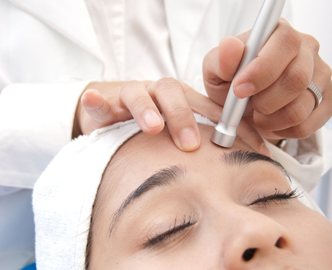
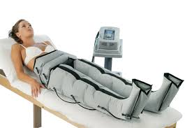

Tratamientos
Conoce todos nuestros tratamientos y elegí el que más se adapte a lo que estas necesitando. Redescubrí la belleza que está en vos.
Para el rostro
Facial :realza tu belleza natural y rejuvenece tu rostro sin perder lo que te hace única.
Para el cuerpo
Reduce medidas y recupera la firmeza de tu piel. Tratamientos ideales para rediseñar tu figura: .Celulitis .Flacidez .Adiposidad localizada .Estrías
ROSTRO
Peeling punta de diamante
Microdermoabrasion Definicion del origen la palabra: La microdermoabrasión con puntas de diamante es un procedimiento no invasivo que consiste en una microdermoabrasión mecánica mediante la acción de cabezales abrasivos recubiertos de pequeños diamantes (exfoliación) que descama, o retira las células muertas de la capa superficial de la piel. Las puntas de diamante estimulan la regeneración celular y la producción de colágeno brindando mayor elasticidad y tono a la piel. Se pueden utilizar tanto en el rostro como en diferentes partes del cuerpo como la espalda, brazos, codos, piernas, etc.
Perfilado de cejas

¿Qué es el perfilado en cejas? Perfilado de cejas: En qué consiste y cómo hacerlo Es un procedimiento cosmético que consiste en el diseño y modelado de las cejas, de acuerdo con la estructura de tu rostro, tus ojos y nariz. El objetivo de este tratamiento no es seguir el patrón de cejas que está de moda, sino perfeccionar su forma natural; sean delgadas o gruesas, largas o cortas
CORPORAL
Presoterapia
¿Qué es y para qué sirve la presoterapia? Qué es la presoterapia, para qué sirve y cómo funciona | ILUNION La presoterapia mejora la oxigenación de los tejidos y favorece la eliminación de toxinas y líquidos retenidos. El principal beneficio va a ser la prevención y tratamiento de edemas, que pueden resultar de diversas condiciones médicas o postoperatorias
Depilacion Laser

¿¿Qué es la depilación láser y cómo funciona? La depilación láser es un procedimiento médico que utiliza un rayo concentrado de luz (láser) para eliminar el vello no deseado. Durante la depilación láser, un láser emite una luz que es absorbida por el pigmento (melanina) del vello
Belleza pies y manos

¿Qué es belleza de manos y pies? Se trata de un ritual de belleza donde, tras un proceso de higiene y cuidado de los pies, se aplica la laca de uñas semipermanente Shellac. Brillo y color de larga duración que vendrá culminado por un relajante masaje con crema ultra hidratante para ofrecer a los pies un aspecto renovado y saludable